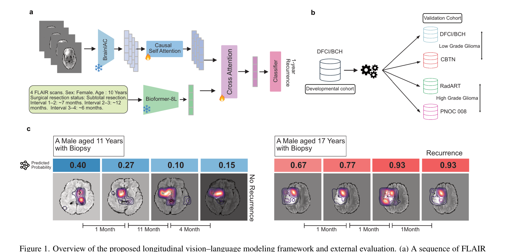

In 2026, I investigated multimodal foundation models for biomedicine at the Artificial Intelligence in Medicine (AIM) Lab at Harvard Medical School. The work was accepted to the 2nd Multimodal Foundation Models for Biomedicine Workshop at CVPR 2026; the full paper is hosted on OpenReview. As a brief summary of my research:
- I probed how the model fuses CT / MRI imaging embeddings with paired clinical metadata via cross-modal attention analysis, and identified the specific decision regimes in which imaging tokens dominate vs. metadata tokens, and where disagreement between the two predicts downstream failure.
- I evaluated downstream transfer on radiologist-relevant tasks - diagnosis, prognosis, and out-of-distribution shift - and quantified how multimodal pretraining changes calibration (ECE) and robustness (worst-group AUROC) relative to imaging-only baselines, holding architecture and training budget fixed.
- I drew clinical implications for medical-AI deployment: multimodal pretraining is not only an accuracy lever - it presents a distinct failure-mode surface that auditors and clinicians need to characterize before integration, and I propose concrete diagnostics for that audit in the paper.
The camera-ready was presented at CVPR 2026 alongside the MMFM-BIOMED workshop program.
